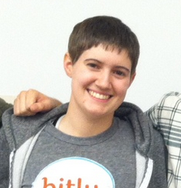

Kris Harbold
 Twitter
Twitter Github
Github LinkedIn
LinkedIn Contact
ContactAbout Me
I'm recent graduate of George Washington University, with a BS in Computer Engineering. My studies focus on data science, machine learning, and embedded systems design. I'm a huge statistics nerd, as well as a lover of biking, sailing and baseball.
Most recently, I worked as a data science intern at Bitly, working to bring understanding and meaning to Bitly data, through real-time visualizations and dashboards. My projects ranging from developing the d3 real-time visualization in the Bitly Real-Time Media Map, to creating internal dashboards aimed at increasing business intelligence for the sales teams.
While finishing up my last semester of college I'm delving into the world of discrimination, using data science to analyze trends in hate crimes across the US. I'm trying to answer the question of how anti-discrimination legislation impacts the occurrence of hate crime reporting. In the long term I hope to see if it's possible to predict if state law enforcement is misrepresenting hate crimes, in an effort to provide human rights activists the means to lobby and put an end to state-sanctioned discrimination. See more on the project here.